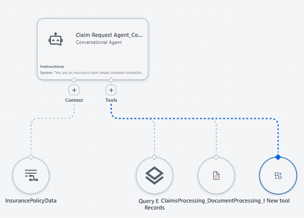

A quick recap of everything you just configured — and what it looks like end to end.
What you did
You created a new project, built a Conversational Agent named Claim Request Agent, gave it a system prompt that drives a full insurance claim intake conversation, added Entities and InsurancePolicyData as contexts for policy lookup and coverage checks, connected two tools — InvoicesIXP (document extraction) and Updated_SaveDocumentData Workflow_Latest 1 (writes the finalized claim to IntakeClaimEntity) — built a Claim Request App that embeds the agent in a browser-based chat experience, deployed it to a workspace, and reviewed how to monitor it once live.
✓
Project and agent created and named
✓
System prompt configured with the full claim-intake instruction set
✓
Added Entities and InsurancePolicyData as contexts
✓
Connected the InvoicesIXP and Updated_SaveDocumentData Workflow_Latest 1 tools
✓
Built a Claim Request App embedding the agent via Custom HTML
✓
Deployed the agent and reviewed the channels it can run in
✓
Reviewed the dashboard used to monitor and audit the agent in production
What this looks like
Here's the finished agent on the canvas — the Claim Request Agent node with its Contexts and Tools connections wired up:
cloud.uipath.com/studio/agent/canvas

The Claim Request Agent canvas — Contexts and Tools connected and ready to run.
💡 What's next
With the agent, context, and tools in place, you're ready to test the full claim intake conversation end to end. Later modules of this workshop will build on this same agent as you move into orchestration, fraud detection, and coded agents.